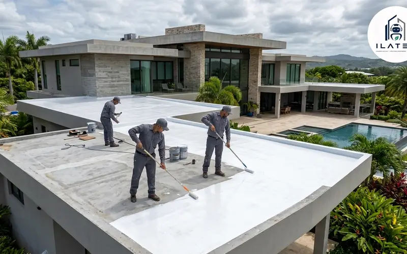
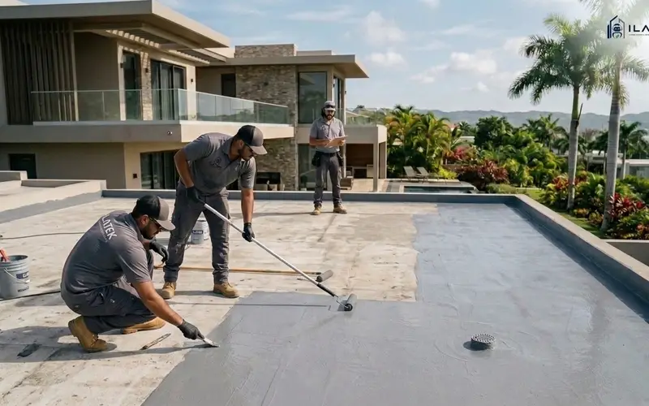
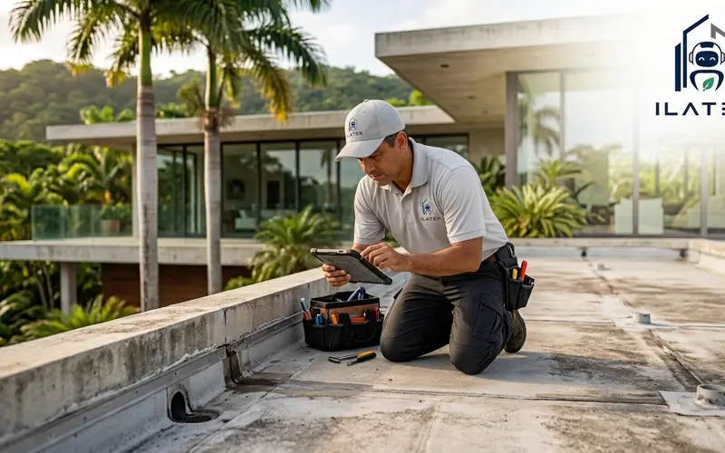

Sellado de techos residencialSellado con silicona, membrana asfáltica, elastomérico, poliuretano o acrílico.

Condominio · Coamo
Sellado e impermeabilización de techos para viviendas en Las Fuentes de Coamo.
Elige el servicio que necesitas y solicita tu cotización.



Completa la cotización y coordinamos la visita.
Ilatek atiende sellado de techo residencial en Coamo, Puerto Rico. Confirme la disponibilidad exacta en Las Fuentes de Coamo al solicitar la cotización.
Tipo de comunidad según fuentes públicas consultadas el 2026-10-21: Condominio.
Conviene revisar el techo cuando aparecen grietas, manchas de humedad, desprendimiento de la capa protectora o filtraciones. Una inspección define el sistema adecuado.
Silicona, membrana asfáltica, elastomérico, poliuretano o acrílico, según el tipo de techo y su estado.
El botón Agenda tu sellado abre el formulario de cotización de techos. Complete los datos y coordinamos la visita.
Completa la cotización en línea y coordinamos la visita.